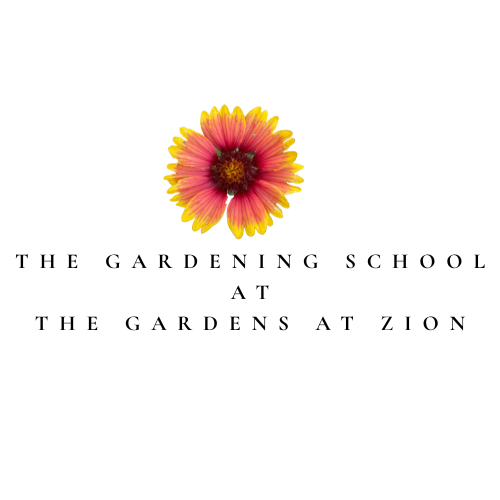
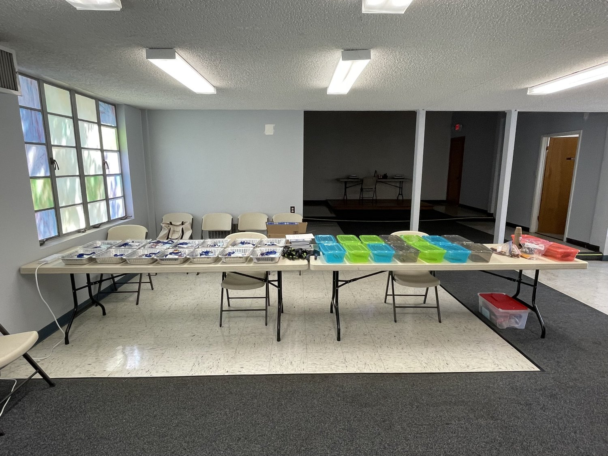
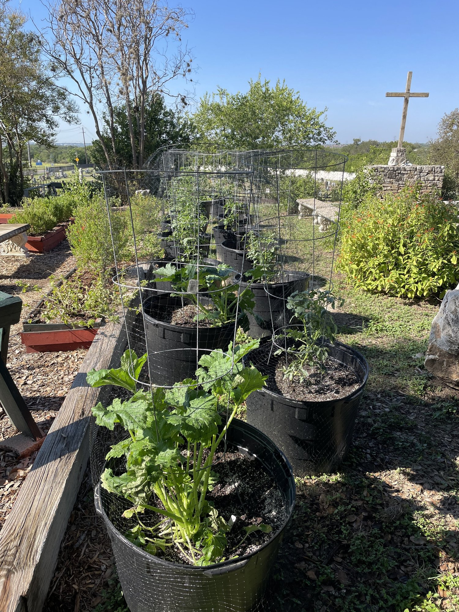
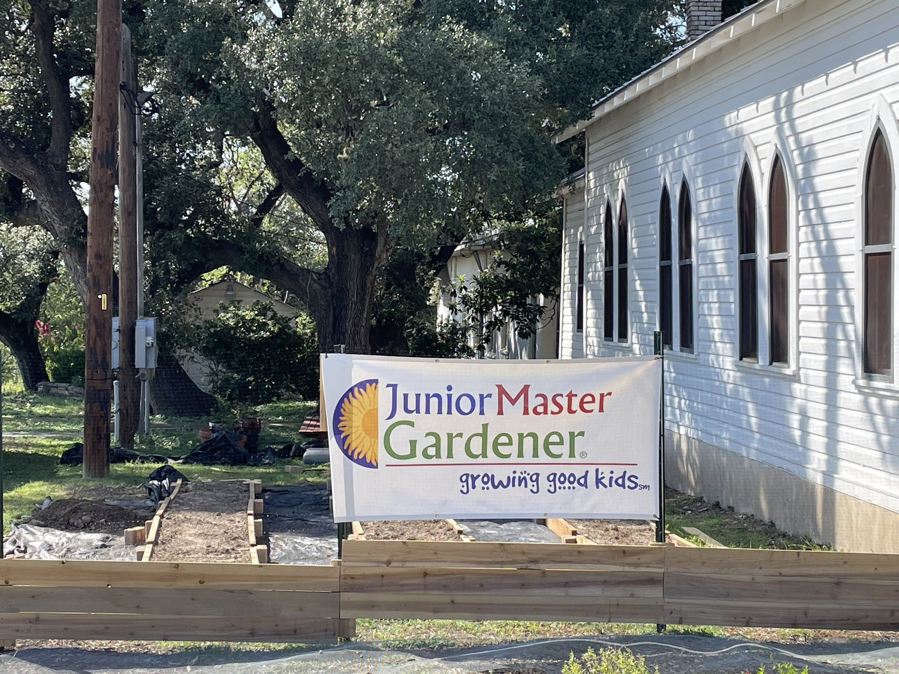
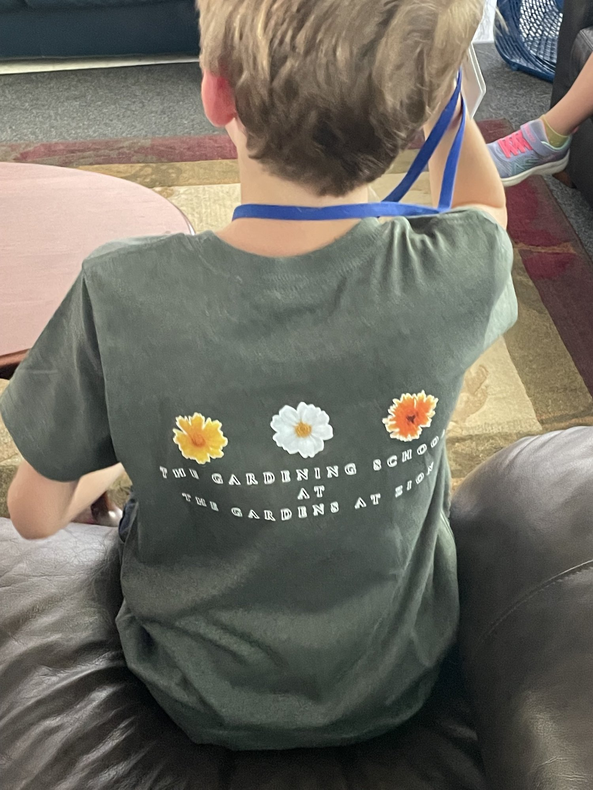
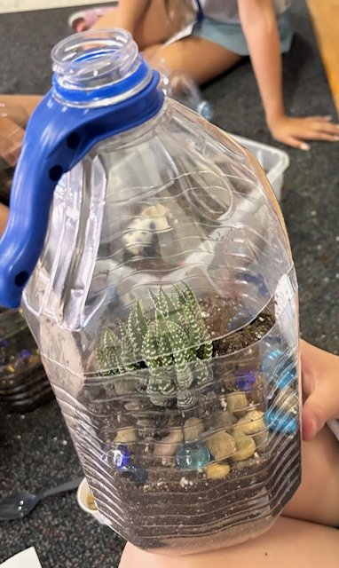
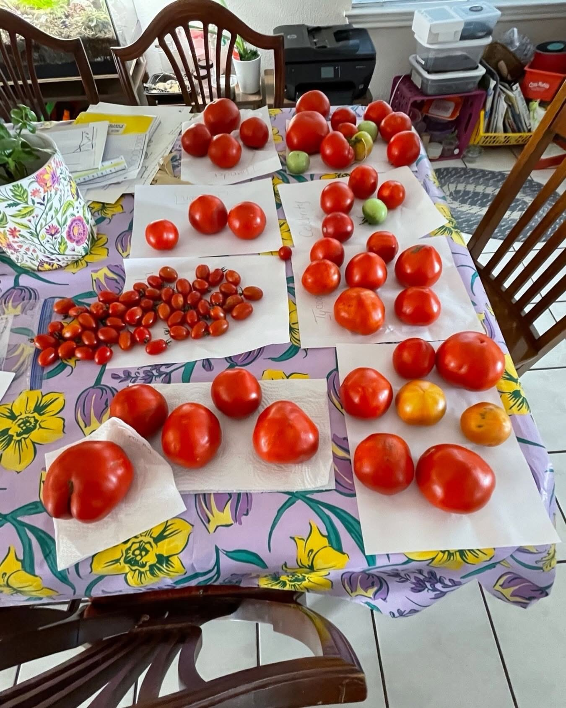
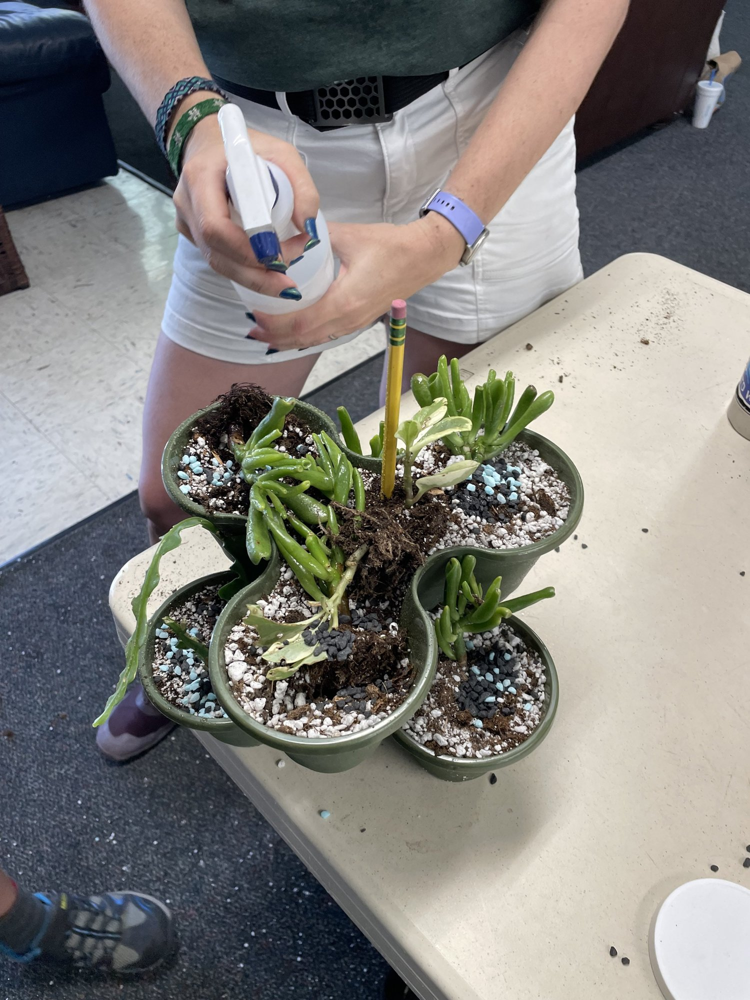
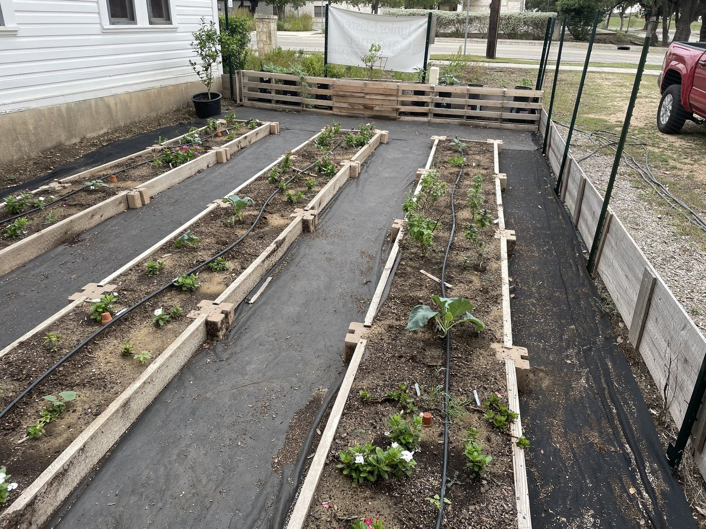

The Gardening School is for youth in grades 3-5. We learn about plants- how they grow, the soil in which they grow; and they take the learning into The Gardens where the charts and graphs take root. These young gardeners study insects and soil, grow tomatoes and trees.They read and they write and they put knowledge into practice but it’s more than that. Research at various universities show that working the soil changes the person and inspired the mind.








